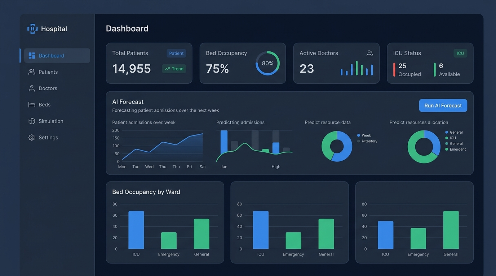

A full-stack cloud hospital platform with real-time ML-based patient triage, capacity forecasting, and Gemini-powered operational insights. Built for the Hexaware Designathon.

The AI Hospital Management System is a full-stack cloud application built during the Hexaware Designathon in August 2026. It combines a React + TypeScript frontend, a Spring Boot Java backend, a FastAPI-based Python ML microservice, and a Gemini AI integration | all containerised with Docker and deployed on AWS EC2.
The system manages patients, doctors, beds, and admissions across ICU, Emergency, and General wards. What sets it apart is the ML layer: three trained models deliver real-time severity assessment, discharge prediction, and bed demand forecasting | directly embedded into the clinical workflow.
Real-time AI Triage: Patient severity is reassessed automatically whenever vitals (heart rate, oxygen saturation, body temperature) are updated. No manual refresh needed.
Three trained ML models: severity_model.pkl (R²=0.918), discharge_prediction_model.pkl (AUC-ROC=0.992), admission_prediction_model.pkl (R²=0.71). All stored as pickle files served via FastAPI.
Gemini AI Insights: The dashboard fetches operational summaries from Google Gemini, surfacing proactive recommendations based on current ward state.
Capacity Simulation: A dedicated simulation page lets staff model scenarios (surge days, additional ICU beds, holiday mode) and see projected outcomes charted with Recharts.
Ward Monitoring: Live occupancy bars for ICU, Emergency, and General wards with color-coded thresholds (<70% green, 70-90% amber, >90% red). Doctor-patient ratio tracked per ward.
Spring Security + JWT: Role-based access control protecting all API endpoints. Springdoc OpenAPI / Swagger UI available for full API exploration.
AWS EC2 + Docker deployment: All three services (React, Spring Boot, FastAPI) containerised and deployed. Includes EC2 key management, setup scripts, and seed data utilities.